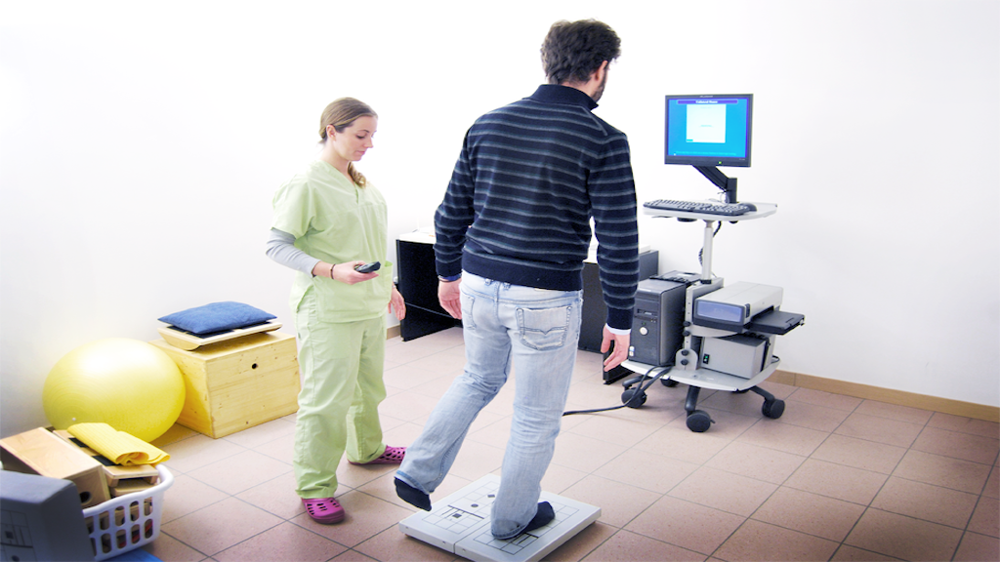

Posturografia
Esame eseguito su pedana stabilometrica per lo studio dei disturbi dell’equilibrio legato a deficit posturali; nell’esame standard, mediante cinque test, vengono analizzate la capacità di controllo dell’equilibrio e la stabilità posturale del paziente soggetto in situazioni stabili o non stabili, attraverso interposizione di cuscino in gomma piuma, con e senza aiuto visivo; grazie alla metodica Visual Feedback risulta inoltre estremamente utile nella rieducazione vestibolare e posturale.
